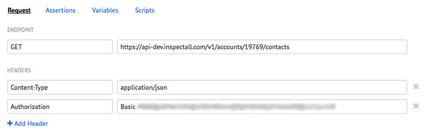
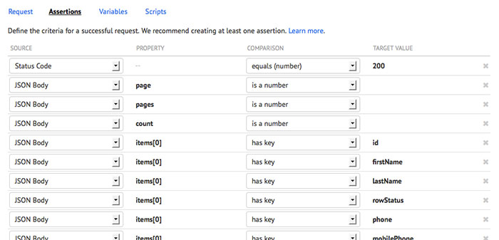
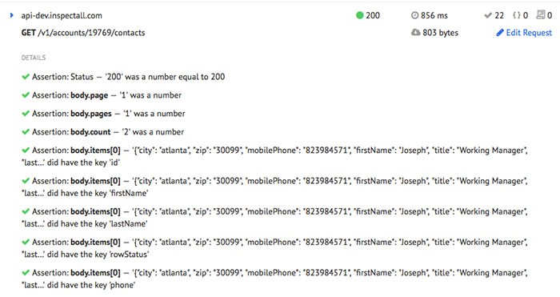
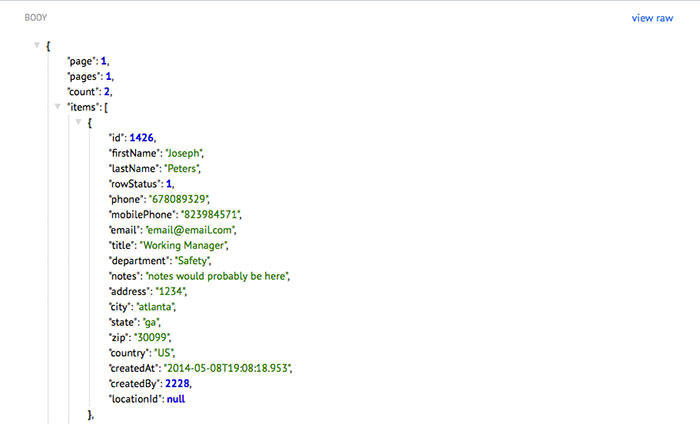
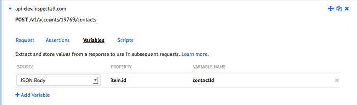
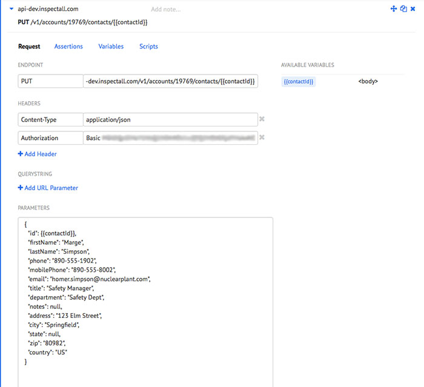
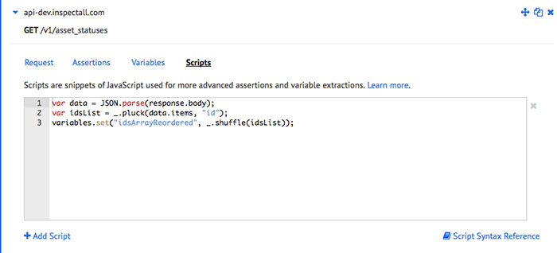
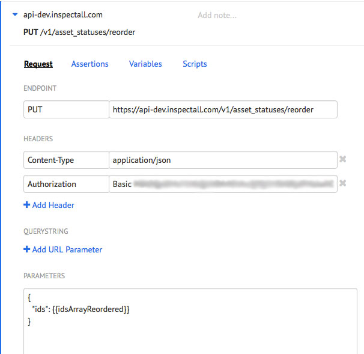
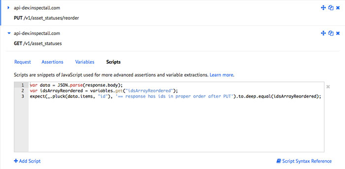

Runscope is a web application that provides a easy to use interface for testing APIs and backend services. In this post, I’m going to outline a few of the ways that I’ve been using Runscope’s automated testing feature, Radar.
Run your first test
My first impression of Runscope’s app was that anyone could write these tests. The interface allows for a language agnostic way to do a request to an API, write test assertions, and even define variables.
For this example, I’m going to test our /contacts endpoint at InspectAll‘s Development API. Let’s start by doing a GET to /contacts in order to receive all contacts for an account.
All I have to do is type in my Endpoint and add a few Headers that are required for our API like Content-Type and Authorization.

GET request for /contacts
Within the assertions, I choose from the available dropdowns to select what I want the JSON returned to look like. I mostly just check for Status Code, keys, and sometimes assert a specific value or type.

Assertions for data returned from GET to /contacts.
After writing some simple assertions, now I can run my tests and see the results. I get a summary of whether my assertions passed overall, and also a line by line evaluation of whether each assertion passed or failed.

All assertion tests passed for our GET /contacts endpoint
I can also inspect the response itself, seeing the Headers and Body of the response.

Formatted response body can be inspected within test runner.
Variables
Another great feature of Runscope is the ability to easily define variables. Below, I’ve added a variable to the JSON Body of my response from my POST to our /contacts endpoint called contactId.

Defining a variable from the JSON response body.
Now, I can use my contactId variable by simply writing within my subsequent tests. For example, I’ve placed my contactId variable within the url of my PUT to /contacts and within the id key in the body of my PUT in order to edit my newly created contact.

The variable is now available for subsequent requests.
I usually also use the variable to request a DELETE on my endpoint so that my tests can nicely clean themselves up.
Scripts
The real power of Runscope’s Radar though comes from it’s Scripts feature. Scripts allow you to write Javascript to write more complex assertions or extract variables. Within Scripts, they’ve also included some incredibly useful libraries including:
- Underscore.Js
- Chai Assertion Library
- Moment.js
- CryptoJS
- json2.js
- marknote XML Parser
Scripts are really useful when you want to assert something a little more complicated outside of keys, values, or status codes.
For example, I had to write a couple scripts to test that a reorder request was working correctly. First, I had to parse the JSON’s response body, then used Underscore’s _.pluck to get the id of each item in my array. Then I used Underscore’s _.shuffle to reorder by ids and set that to a variable called idsArrayReordered.

After my tests are successfully run, my idsArrayReordered variable will be available for use on any subsequent test. Now I run my PUT request to asset_statuses/reorder with my shuffled id’s array.

Sending my variable to a new PUT request.
After my PUT, I do a GET for my asset_statuses endpoint, I write a script expecting my ids array to have been properly reordered. Here I’ve written my assertion using Chai’s BBD style of expect.

Assertions written in Scripts.
More Features
Runscope’s API testing has a ton more features that I didn’t even cover here. They allow you to run initial Scripts and variables before a set of tests are run. This is great for sandboxing and tearing down tests. They also allow you to schedule tests to run at specific intervals from once a day down to every minute. They also have a large suite of integrations including GitHub, Heroku, CircleCI, and Jenkins so that you can set your tests to run on specific push or deployment events.